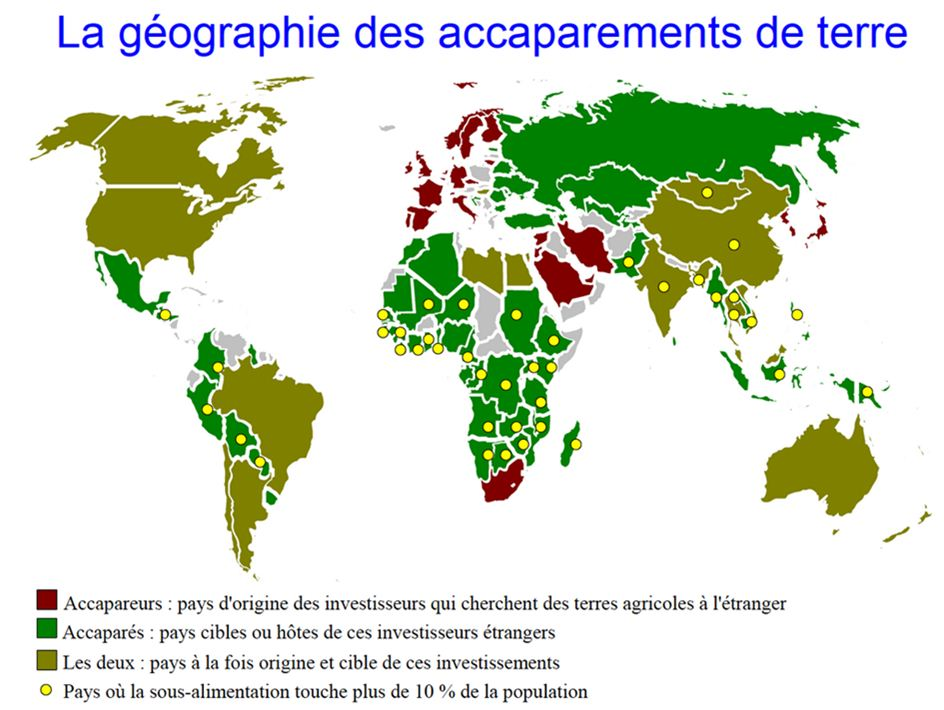
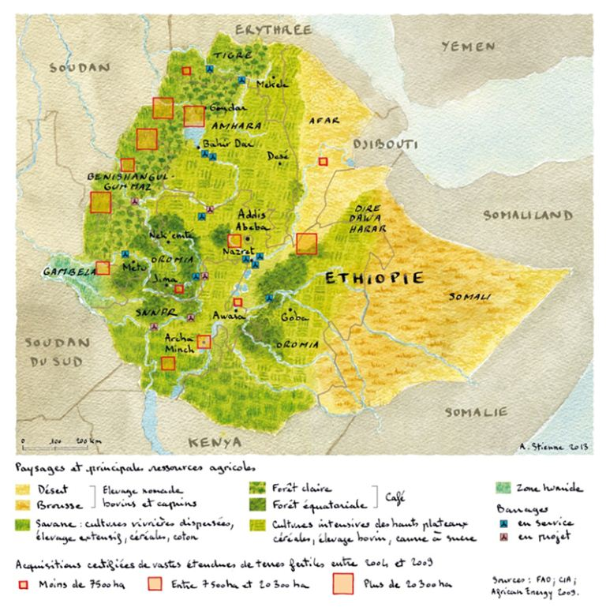

Les achats ou les locations de terres arables un peu partout dans le monde par des pays qui ne disposent pas toujours de ce type de ressources en quantité suffisante ont un impact dont on ne mesure pas, toujours, la portée.
En 2014, Agnès STIENNE, se définissant comme artiste et cartographe, avait, ainsi, réalisé quelques cartes1 qui montrait l’ampleur de ce phénomène qui commence à inquiéter certains milieux.
Pourtant, l’accaparement des terres existe depuis des siècles. L’histoire de la colonisation, qu’elle soit positive ou négative, en est l’illustration la plus concrète. Ainsi, pendant la période coloniale de l'histoire du Viêt Nam, l'administration française avait déployé de grands efforts en faveur de l'agriculture indigène. Ces efforts avaient apporté de très bons résultats particulièrement dans le renforcement des digues au nord, dans l'irrigation des régions insuffisamment alimentées en eau pour la culture du riz au nord et au centre du pays et dans le drainage en Cochinchine. La masse paysanne, cependant, ne put pas bénéficier de ces bienfaits. Dès les premiers jours de la présence française en Cochinchine, les terres avaient été accaparées par les colons européens. La culture de la canne à sucre a été, également, l’une des causes de la colonisation et, paradoxalement, l’une des causes du début de la décolonisation (à partir du moment où le sucre a pu être obtenu à partir d’autres matières premières, comme la pulpe de betterave, l’Amérique du Sud a été moins « intéressante »). De nos jours, où que l’on regarde, on découvre que la nouvelle industrie des biocarburants, promue comme réponse au changement climatique, semble se fonder sur des investissements dans le foncier qui s’apparentent, le plus souvent, à une forme d’expulsion des populations de leurs terres contribuant, ainsi, à ce phénomène de migration du sud vers le nord qui met en émoi les gouvernements européens. Cet accaparement des terres est un facteur que l’Europe observe avec attention : « Nous sommes très inquiets2 parce que cela constitue une nouvelle manière d’exploiter les pays en développement... Les pays les plus pauvres vendent des denrées, elles exportent des migrants et à présent ils vendent leurs terres dont ils ne retireront aucun bénéfice en matière de nourriture ou de quoi que ce soit » (Stefano MANSERVISI3, directeur général du développement à la Commission européenne).
Dans ce cadre, la stratégie d’investissements chinois, dans le foncier, explique son intérêt pour l’installation d’une base militaire permanente à Djibouti que j’avais évoqué dans un billet précédent.
Selon une étude minutieuse réalisée par The Oakland Institute4 en 2011, rien qu’en Ethiopie, au moins 3,6 millions d’hectares de terres ont d’ores et déjà été transférés à des investisseurs étrangers. Toutefois, selon le Stockholm Environment Institute5 rien ne prouve, clairement, que la Chine, s’accapare des terres sur une grande échelle en Afrique orientale.
Une autre étude, de Serigne SAR6, montre que les Chinois sont les premiers propriétaires étrangers en Afrique, devant les Etats-Unis, menaçant, ainsi l’équilibre alimentaire sur ce continent. En réalité, les investissements chinois dans l’industrie agroalimentaire, notamment en France7, semble jouer un rôle indirect dans le phénomène d’accaparement observé en Afrique et en Amérique du Sud. Les secteurs visés par les Chinois sont, essentiellement, dans l’industrie laitière et dans le soja, nourriture principale du bétail. Dans le secteur stratégique du soja, dont la Chine absorbe maintenant 65 % des exportations mondiales par le biais du géant COFCO8, numéro un de l'agroalimentaire chinois. En 2014, ce groupe qui dépend du gouvernement central a ainsi déboursé près de 3 milliards de dollars pour prendre pied dans le monde discret mais puissant des sociétés de négoce agricole. En acquérant la majorité de la société suisse NIDERA9, puis de l’hongkongaise NOBLE AGRI, COFCO s'est en effet assuré le contrôle de deux puissants réseaux, qui gèrent des transactions annuelles portant sur près de 100 millions de tonnes de céréales et d'oléagineux… En pesant, indirectement, sur les producteurs, il est légitime de penser que les Chinois participent à une grande échelle à l’accaparement des terres… Toutefois, en Afrique, le « Soft power » chinois a toujours rendu « acceptable » les investissements chinois dans le foncier comme le montre la légende des « Villages BAODING »10 ou le livre que (« Will Africa feed China11 ») vient de commettre Deborah BRAUTIGAM12, spécialiste de la Chine et de l’Afrique. Il n’est qu’à lire cette affirmation, tirée d’un rapport de l’IPPA13 (Think tank basé au Nigeria) pour s’en convaincre « More importantly, Chinese investment in Africa is not a threat to African countries and they are full of gains ».
La force de la diplomatie chinoise, officielle ou informelle, fait que la Chine a réussi son implantation sur le continent africain devenu l’un des premiers débouchés de son industrie agroalimentaire. La prochaine étape du « zouchuqu », ce qui signifie « sortir des frontières » (partir à la conquête des marchés internationaux) est désormais l’Europe où les Chinois par le biais de participation dans les groupes agroalimentaires ou financiers14 se montrent de plus en plus présent comme, propriétaires fonciers, en commençant par l’Europe de l’Est comme en Ukraine15 ou en Serbie… Et la France commence à être touchée par le phénomène16. En plus, il y a, désormais, le train17 !
Partager cette page